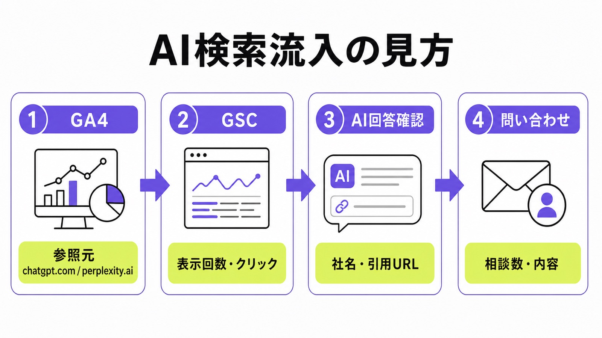
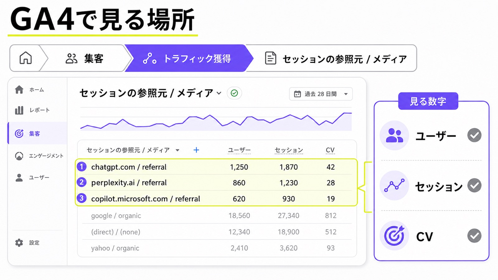
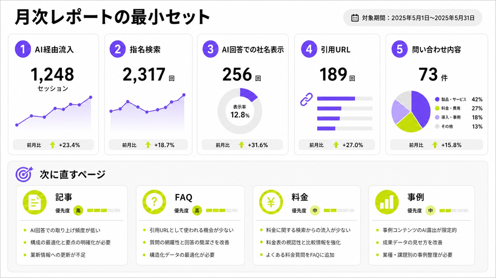

AI検索からの流入を計測する方法｜GA4・GSC・LLMOモニタリングの基本

AI検索からの流入を見たいとき、まず迷いやすいのが「どの画面を見ればいいのか」です。ChatGPT、Gemini、Perplexity、Google AI Overviewsなどを経由した接点は、従来のSEO流入ほどきれいに分かれて見えるとは限りません。
この記事では、シート候補の「GA4で見える/見えない範囲を整理」という切り口に沿って、GA4、GSC、LLMOモニタリングをどう分けて見るかを説明します。成果の全体像を先に知りたい方は、AI検索のROIもあわせて確認してください。
専門ツールを入れる前でも、月1回の表で十分に始められます。大切なのは、流入数だけで判断せず、AI回答での社名表示、引用URL、指名検索、問い合わせ内容まで同じ流れで見ることです。
目次

AI検索流入計測の全体像
AI検索の計測は、1つの画面だけで完結させようとすると分かりにくくなります。GA4はサイトに来た後の訪問、GSCはGoogle検索上の見え方、LLMOモニタリングはAI回答の中での見え方を確認するために使います。
GA4・GSC・AI回答記録を分けて考える
まず、GA4ではChatGPTやPerplexityなどからサイトに来た人を見ます。GSCでは「AI検索」という参照元を見るのではなく、Google検索での表示回数、クリック数、検索語句、指名検索の変化を確認します。AI回答の中で自社名やURLが出たかは、別の記録表で見るのが現実的です。
この3つを混ぜると、数字が合わずに混乱します。最初は、GA4は来た人を見る表、GSCは検索での変化を見る表、AI回答記録はAIに出たかを見る表、と役割を分けてください。AIMAのLLMOモニタリングでも、表出率や引用率はアクセス解析とは別に記録します。

流入数だけでなく問い合わせまで見る
AI検索では、ユーザーがAI回答内で比較を終えてから、あとで社名検索や直接流入でサイトに来ることがあります。そのため、GA4に出るAI経由セッションだけを成果と見ると、実際より小さく見える場合があります。AI検索の計測では、入口だけでなく、その後の行動まで見る必要があります。
特にBtoBでは、問い合わせ数、相談内容、商談化したかが大切です。AI回答で自社を知った人は、問い合わせ時点で課題を整理していることもあります。流入数より、相談の質の変化を見ると判断しやすくなります。PVが増えていなくても、具体的な相談が増えていれば前進です。
GA4でAI検索からの流入を見る手順
GA4で最初に見るのは、集客レポートの参照元です。AIツール名が参照元として残っていれば、AI経由でサイトへ来た人を確認できます。ただし、すべてのAI接点が必ず参照元として残るわけではありません。
参照元/メディアでAIツール名を探す
GA4では、レポートの「集客」から「トラフィック獲得」を開き、ディメンションを「セッションの参照元 / メディア」にします。そこで、chatgpt.com / referral、perplexity.ai / referral、copilot.microsoft.com / referral のような行がないかを確認します。まずはAIツール名を探すだけで十分です。
Google Analyticsの公式ヘルプでは、参照元について次のように説明されています。つまり、GA4で見ているのは「ユーザーがどこから来たか」です。AI回答の中に出た回数そのものではないため、GA4だけでAI検索の全体を判断しないようにしましょう。
“Source: Where your traffic originates”
出典：Google Analytics Help「Traffic-source dimensions, manual tagging, and auto-tagging」

CVや問い合わせ内容と並べる
AIツールからの流入が見つかったら、ユーザー数やセッション数だけで止めないでください。お問い合わせ、資料請求、無料診断、予約などのCVがあるかを同じ表で見ます。可能であれば、フォームの自由記述や営業メモも確認し、どんな悩みを持って来た人なのかを見ます。
AI検索はまだ完全に測り切れる経路ではありません。だからこそ、少ない数字でもCVに近い動きを優先して見ます。たとえば月5件のAI経由流入でも、そのうち1件が具体的な相談なら価値があります。逆に100件来ても問い合わせが薄いなら、記事や導線を見直す必要があります。
| 見る場所 | 見る数字 | 注意点 |
|---|---|---|
| GA4 | AIツールからの参照流入、CV | AI回答に出た回数は分からない |
| GSC | 表示回数、クリック数、指名検索 | ChatGPTなどの参照元別流入は見ない |
| 手動記録 | 社名表示、引用URL、競合名 | 毎月同じ質問で見る |
GSCとLLMOモニタリングをつなぐ
GSCは、AIツールからの流入元を確認する場所ではありません。Google検索上で、自社ページがどんな検索語句で表示され、クリックされているかを見る場所です。AI検索対策では、GSCの数字を「周辺の変化」として使います。
指名検索と比較キーワードの変化を見る
GSCでは、会社名、サービス名、代表者名などの指名検索が増えているかを見ます。AI回答で自社を知った人が、その場でクリックせず、あとから社名で検索することがあるからです。あわせて「LLMO 会社」「AI検索 対策」「料金」「比較」など、問い合わせに近い検索語句も確認します。
Search Consoleの公式ヘルプでは、Performance reportについて次のように説明されています。GSCは、Google検索での見え方を追う道具です。AI検索経由の全流入を直接見る道具ではありませんが、検索需要の変化を見るには役立ちます。
“The Performance report shows important metrics”
質問別に社名・引用URL・競合名を記録する
LLMOモニタリングでは、見込み客がAIに聞きそうな質問を10個ほど決めます。たとえば「中小企業向けのLLMO会社は？」「AI検索対策を月額で頼むなら？」「ChatGPTに会社名を出すには？」のような質問です。毎月同じ質問で、自社名、引用URL、競合名を記録します。
Google Search Centralは、生成AI検索でもGoogle検索の土台が重要だと説明しています。つまり、AI検索だけを別物として追うのではなく、検索で読まれるページを整えながら、AI回答でどう扱われるかを見る必要があります。ここで見るべきなのはAI回答内の扱われ方です。
“Google Search finds and processes your pages”
出典：Google Search Central「Optimizing your website for generative AI features on Google Search」
月次レポートとAIMAでできること
AI検索の計測は、最初から高度なダッシュボードを作らなくても始められます。むしろ、初期はシンプルな表のほうが続きます。毎月同じ数字を見て、次に直すページを決めることが大切です。
月1回の表で十分に始められる
月次レポートには、AIツールからの参照流入、指名検索、AI回答での社名表示、引用URL、問い合わせ内容、次に直すページを入れます。数字を細かく増やしすぎると運用が止まるので、最初は1枚の表で十分です。毎月同じ項目にすることで、変化が見えます。
次に直すページは、記事、FAQ、料金、事例、会社概要のどれかに分けます。AI回答に出ないなら根拠ページを増やす、出ているのに問い合わせが弱いなら導線を直す、誤情報が出るなら公式情報を厚くする、という形です。計測は次の改善を決めるために行います。

AIMAなら月5万円で計測と改善まで回せる
AIMAは、LLMOに特化した支援を月額5万円で提供しています。相談回数の上限なし、記事作成・記事修正込み、最低契約期間なしなので、計測だけで終わらせず、見えた課題を記事、FAQ、料金ページ、事例ページへすぐ反映できます。社内に専門担当者がいなくても、改善作業まで任せられるのが特徴です。
たとえば、GA4でAI経由流入が少ない、GSCで指名検索が増えない、AI回答で競合だけが出る、問い合わせが増えない、といった状態を一緒に確認します。そのうえで、LLMOのKPI、FAQ、構造化データ、内部リンク、既存記事修正を組み合わせて、月ごとに小さく改善します。
参考：COUNTER株式会社 LLMO/GEO/AISEO対策サービス
AI検索流入計測に関するよくある質問
AI検索からの流入はGA4だけで完全に測れますか？
完全には測れません。GA4では、AIツールからサイトに来た参照流入を確認できます。ただし、AI回答を見たあとに指名検索、直接流入、広告、SNSなど別の経路で来る人もいます。GA4、GSC、AI回答の手動記録、問い合わせ内容を一緒に見て判断しましょう。
GSCでChatGPTやGeminiからの流入は見えますか？
GSCでは参照元別流入は見ません。GSCで見るのは、Google検索での表示回数、クリック数、検索語句、平均掲載順位です。ChatGPTやGeminiから来た訪問は、残っていればGA4の参照元で確認します。GSCは、指名検索や比較キーワードの変化を見るために使います。
まとめ
AI検索からの流入計測は、GA4だけでは足りません。GA4ではAIツールからの参照流入、GSCでは検索需要と指名検索、LLMOモニタリングではAI回答内の社名表示や引用URLを見ます。
最初は、月1回の表で十分です。AI経由流入、指名検索、AI回答での社名表示、引用URL、問い合わせ内容、次に直すページを並べれば、どこから改善すべきかが分かります。
AIMAは、LLMO特化、月額5万円、相談無制限、記事作成・修正込みで、計測と改善をまとめて支援します。まずは無料LLMO診断またはお問い合わせからご相談ください。